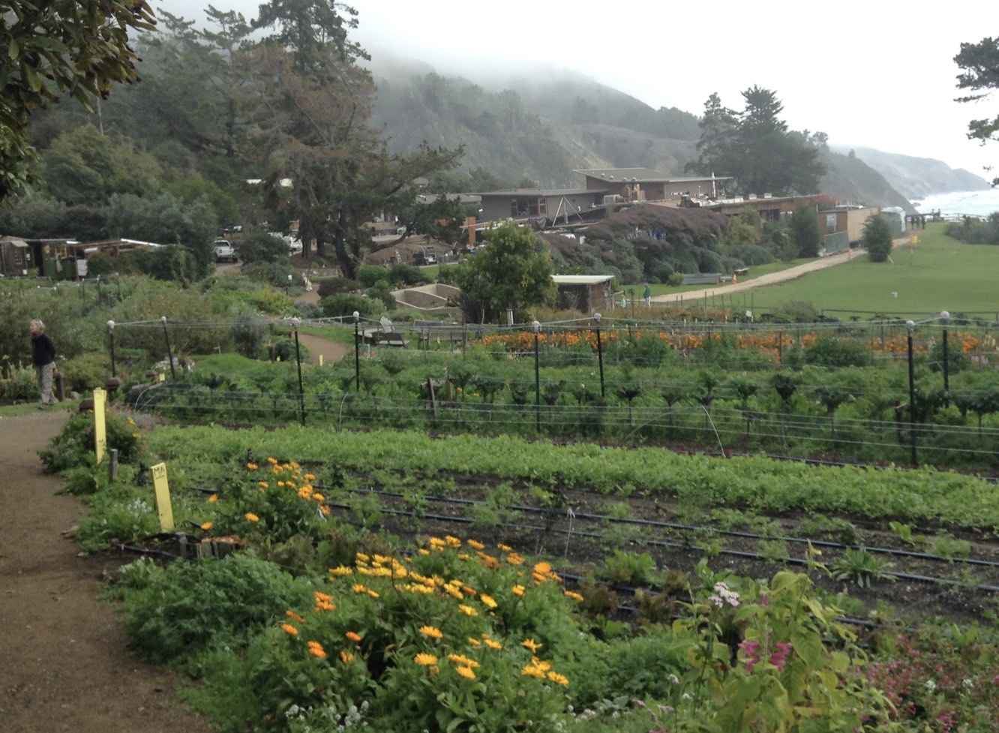

| アナスタシアによせて ４ 愛と政治とお金の今昔 | |
| 堀田真紀子 | |
| (2017) | |
チャプタ 1
愛の次元
崩壊のプロセス
愛の次元を成り立たせているもの
『アナスタシアによせて １』でも語ったように、愛の次元の菜園は、自給自足のための無農薬家庭菜園以上のものだ。作物は、その栽培のプロセスで、私たちの身体と、しっかり交信しながら、宇宙、地球と私たちが交信する橋渡しをしてくれている。
この交信の基調になるのは、愛情の贈り合い。アナスタシアによると、愛情込めて育てられ、その人の情報をたくさん浴びながら育った植物は、その人に必要なものを空と大地から集めてきて、どんな薬にもかなわない力を与えてくれるそうだ。
チェリーとのラブストーリー（『響きわたるシベリア杉』の「桜の木」の章）ウラジーミルは、お店の人が、多分育たないといった小さく弱々しい桜の苗木を捨てないで、世話をし続ける。その世話の仕方もとんちんかん。化学肥料を入れて根を焼いたりすることになったけれど、それでも桜の木は、そんな彼の気持ちに答えようと一本で懸命に、愛の次元をつくろうとして、花咲かせ、実をならせた。その実を彼は結局食べなかったのだけど。
これについてアナスタシアが語った言葉は以下の通り。
あなたは知っているのね。植物は人間の気持ちの表出にたいして反応するということを。彼らは偉大なる創造主の後計画通りに、人間の必要に答えるため、力を尽くしてあらゆることをしようとするの。あるものは実を実らせ、あるものは美しい花を咲かせて、人間のポジティブな気持ちを呼び起こそうとし、さらに他のものも全て、我々吸う空気のバランスを保ってくれる。
そして彼らの目的にはもう一つ、とても大切なものがある。ある人が植物と直接交流するようになると、その植物は彼のために真の愛の次元空間を形成する。この愛は、地球上のすべての生命にとって不可欠なもの。
多くのダーチュニク（家庭菜園を作っている人たち）は、自分たちの菜園を心からいとおしく思っている。なぜならそこは、彼らにとって、真の愛の次元空間が形成されている場所だから。あなたが植えて気遣ってあげた、あの小さなシベリア桜の気も、すべての植物が与えられたこの天命を全うするためにやることを、自ら実行しようとした。
さまざまな種類の植物がたくさんあって、人間が直接交流し、愛を持ってそれに触れている場合、植物は人間にとってそれだけ強力な愛の次元空間を形成できる。彼らは大勢で力を合わせて、人間の魂に良い影響を与え、体を癒すという、人間にとって重要な意味を持つ愛の次元空間を作り出す。（響５３）
食べるのは、その交信の総仕上げ。
栄養以上のもの エネルギーのやりとりも、大きく絡んでくる。
だから、どんな気持ちで摘み取り、どんな気持ちでそれを料理し、食すかも重要。そんなふうにして、個性化された空、大地の力を直接、食べる。
植物と人間の交信の度合いは、かつてもっと深くて、その人が育てた食べ物を食べるだけで、ソウルメートかどうかもわかったし、直感でその場所をさぐりあてることもできたのだそう。
その人と、その人の波長と共振している、その人のと親しい人には、薬効がある。
そうでない人、全然違う波長の人には毒になることもあり。だから、泥棒などしようがなかったという。
『植物の精神生活』という本にくわしい、人間と植物との交信がなかなか科学的事実として定着しないわけ。実験者によって全然違う結果が出る。実験者の動機、思いに反応してしまう。
そんなことありっこない、植物は物にすぎないと思っている人がやっても、植物は共感を示さない。
心通わせる双方向の幸せいっぱいのストーリーを作っていけばいい。その集積が、愛の次元になる。
愛の次元崩壊のはじまり
未邦訳の１０巻、『アナスタ』で、アナスタシアはウラジミールの二人目の子供、アナスタを授乳しながら、彼女の前世について語る。氷河が迫ってくるという、当時の大災害を、食い止めようとした女の子のストーリーだ。
中でも特に重要だと思われるのは、一族の長老であるアナスタのひいおじいさんが、子供達を教える学校のような場所での話。
ある日、ひいおじいさんが、子供達に、いろんな動物が、どうすれば人間の役に立つか考える授業をしていたときに、蛇だけみんなどうすれば役に立つか、誰もわからなくて、みんなで頭をかかえていた。
するとある男の子が、蛇に牛の乳をごくごく吸ってもらって、人間のところまで来て、甕の中に吐き出すように訓練すれば、乳搾りの仕事が楽になると提案した。
その言葉に、アナスタは、「そんなことをすると、人間が牛になる！」と抗議。
「何のことを言っているかわからない、理解できるように説明しなさい！」と言われて、彼女は、
「蛇がミルクを運んでくると、人間は蛇にだけ感謝して、牛に感謝しなくなる。牛の喜びもなくなるし、牛の喜びを感じたときの人間のよろこびもなくなる。
ただ、運んできただけの蛇が、人間の感謝や愛情を吸い取っていく」と答える。
牛のミルクを蛇に吸ってもらって、人間が飲みやすいように甕に吐き出すようにするアイデアに対して、アナスタが言ったこのコメントは、とても意味深い。
何が愛の次元を成り立たせているのか、その後、私たちがいったいどうしてこれを失っていったのか、そして、大惨事を自ら招くような人間の生き方が、一体どこから始まったのか、そうした情報がここに全てこもってると思われるからだ。
愛の次元とは、人間が、愛とインスピレーションにかられながら、動植物をそれぞれふさわしい位置に配分し、役目をあたえていくことでつくられていく住処だ。
人間がふりそそぐ愛のエネルギーの心地よさに、動物たちはおとなしくなついていて、いくらでも、大喜びでその役目を果たす。見つめられ、声をかけられるだけでもうっとりしているし、身体を愛撫してもらおうなら、もう恍惚状態。
アナスタシアやヴォロージャの住処でウラジーミルが一番驚いたのは、彼らは餌付けをはじめ、動物たちの世話は一切しないこと。動物たちは完全に自分で自分の面倒を見ている。逆に動物たちが、人間に餌付けしたり、面倒をみてくれていることだった。
太陽や水が生きるために欠かせないように、動植物にとってそもそも、人間の愛のエネルギーは、原初状態では欠かせないもの。動物たちは本当にそれを得れるためには、本来、何でもするのだとアナスタシアも語っている。
このことを考えると、アナスタがなぜ蛇という仲介者に牛の乳をしぼらせるのに反対したか、理由は明らかだ。牛から愛のエネルギーを取り上げることになってしまうから。でも、アナスタ以外には、賢者の曽祖父も含め、誰もそれに気づかなかった。
今の私たちの世界にも、ペットや家畜ととても深い関係を結び、人間に忠誠をつくし続けるハチ公みたいな動物はいるし、そうした美談に私たちは心動かされる。そういうところに、かすかにでも、人間が自然を破壊し始め、自然から遠ざかる中で失われた原初的な関係の記憶、名残がみられるといえるかもしれない。
で、そうやって、動物を、人間が降り注ぐ愛の中で優しい、賢い、役立つ存在に変えて、適材適所に配置していくことを、アナスタシアは「共同の創造」と呼んでいる。
その一番いい例は、アナスタが可愛がってたマンモスのダンだ。ダンは、アナスタの地所で飼われていたマンモスだが、子供の時に足に怪我をして、しばらく動けなくなったその間、アナスタにうーんと可愛がられ、しつけられた。そして人間の気持ちにとても深く感応し、人間の話す言葉も理解できるほどの賢い、そしてやさしいマンモスになった。
ちょっと話を先取りしてしまうけど、アナスタは、氷河を止めようと、マンモスのダンと子猫のキティと一緒に、家族の地所に残る。そのとき彼女の前に、ブロンドの青年、おそらく光の勢力の化身のヴィジョンがあらわれ、言ったことによると、神はマンモスを創造した。でも、ダンはいまや、マンモスの姿形はしているけれど、いまや他のマンモスとは全く別物といえる。つまりアナスタは、ダンを育て上げることで、神の創造をますます完璧にする共同の創造を行なったのだ、と。
このダンのように、愛の次元とは、そこに咲く花、草木の一つ一つ、歩き回る動物たちはすべて、その人の愛のエネルギー、その人の情報を浴び、その人と一体になって変容を遂げていく。その外にいる同じ種の動物とは、姿形だけ似ているけれど、全然違う、忠実でやさしく、役に立つ、かしこい存在に生まれ変わっていく場所だ。
共同の創造にまた、動物の中に神がこめた意図を読み解き、引き出すという側面もある。
8巻目の『新しい文明』の中に、アナスタシアとウラジーミルの最初の子供、１０歳になるヴォロージャが、タイガの自分の住処で、渡り鳥を飼いならす実験をする話が出てくる。彼はなぜそんなことをはじめたのか。そもそもの発端は、渡り鳥が、ちゃんと自分の生まれ育った場所に戻ってきて卵を産むのはなぜかと考えたこと。それは、人間たちに贈り物をするためじゃないか。それがこの渡り鳥を創造した神の意図なんじゃないか。であれば、この意図が発揮できるように人間の暮らしを整えていけばいいんだ。
それができるってことを証明するために、ヴォロージャは、渡り鳥の卵を世話し、幼鳥を飼いならしては、渡りのシーズンになると、大空へ解き放ってる。そして、季節になるとまた同じ鳥がすっかり成長した姿で戻ってきて、卵を産む様子を見届けてる。彼も母も祖父もヴェジタリアンで卵は食べないけれど、将来、１ヘクタールの地所に愛の次元をつくってこれから住み始めるみんなのために実験しているのだという。
神のそもそもの意図は、アダムとイブが最初にいた楽園のように、食べるもの、着るものに心を煩わさなくても生きていける状態に人間を置くこと。だから、正しく、一つ一つの動物や草木の意図を読み解け、その意図が生きるように配置し、組み合わせながら、彼らと共存できるように私たちの暮らし全体をデザインすれば、汚染も欠乏も知らない、持続可能でゆたかな生活ができる。それはパーマカルチャーの理想郷のようなものだっていえるかもしれない。
というわけで、愛の次元としての家族の地所は、中心にいる人間が、そこにいる動植物と愛し愛される深い関係を結びながら、なだめ、役立つ賢い存在へと進化させていく場所。と同時にインスピレーションにかられながら、それらに「目的」を与え、自分たちの暮らしに役立つように、芳しい香り、ここちよい音、美しい風景が生まれるように、適材適所に配置しながら作っていく場所。愛し合う動植物の忠誠心と協力、その力を引き出し上手に組み合わせるパーマカルチャー的なデザイン力のおかげで、そこでは楽に自給自足生活ができる。
動物に人間のために働いてもらったり、食べ物を用意してもらうなんてメルヘンチックで空想的に聞こえる。それでも、真面目な議論に値するって、自信を持って私がお勧めできるのは、それが事実かどうかよりも、そこにこめられた思想が、とても普遍的だと思うから。事実ではない、たとえ話に過ぎないと思ってくださっても、この思想の方の意義は薄れない。
その思想は何かと言うと、一言でいえば、「ギフト」から「取引」へと、私たちがやることなすこと全てのモチベーションを変えるとき、そこで何が起こるかということ。
神から人間に、人間から動物たちに注ぎ込まれる愛とインスピレーションのこの滝のような流れの中にあるとき、その中でなされることはすべて純粋な贈り物、ギフトになる。
これをギフトの流れとよぶことにしよう。
ギフトの流れの中では、やること自体が報酬だから、餌やご褒美、お金をはじめとした見返りの期待なんていらない。
さらに言えば、鞭もいらない。つまり強制感や義務感とも無縁。たたただ、あふれるような愛とよろこびから、感謝の気持ちからすすんでなされることばかり。誰に対してというわけでもなく、全てに対して！働かせていただけて、ありがとう！っていうふうに。今の私もそうだけれど、それを「神に頭をなでてもらってる」って呼んでるわけだ。
ただこの「頭をなでる」手は、直接触れるものじゃないきゃいけない。先ほどの「蛇」のような仲介者がそこに入ると、愛の次元を貫く、愛のエネルギーの循環、ギフトの流れはそこで途切れてしまう。そのときはじまるのが、取引だ。
アナスタの牛の例に戻ろう。人が牛と直接触れ合わなくなり、感謝や愛情をこめて見つめたり触れたりしなくなると、牛の方も人間のために、すすんでよろこんでミルクをあげるのをやめてしまう。ミルクはそのとき、牛から人間への贈り物、ギフトではなくなる。その代わりに、強制的に、あるいは、餌付けや世話と引き換えになされる一種の「取引」。人間にとっても、牛は「商売道具」に過ぎなくなり、少しでも安く、効率よくたくさんとれれば、ってことになる。ミルクは、文字どおり搾り取られ、搾取されるものに変貌をとげ、もちろんミルクの品質も全く変わってしまうだろう。
生き物たちと、他の人間たちとの直接の気持ちの通い合いが失われた後、そこでやりとりされていたギフトが消えた後、ギブアンドテイクをバランスさせて、チャラにして、気持ちよく別れるだけの取引が、自然を覆うようになる。その覆い方は本当に分厚く、すさまじく、私たちは地球の裏側からとりよせた、誰が作ったとも知れない匿名的なものばかりを口にするようになってしまう。今私が食べているりんごの木に感謝を送ろうとしても、難しい。
ウラジーミルが描いて見せたイメージが、この異常さを理解するのに役に立つ。
たとえば、りんごが食べたくなったとしよう。菜園の中に住んでいたら、外に数十歩歩み出て、りんごに手を伸ばし、かぶりつけばいい。でも、今の世界では、その木との間に、たくさんの人が立ってる。りんごを世話し、摘む人。そのりんごを磨く人、梱包し箱詰めする人、運送する人、店に並べ、売る人・・・
このすべての人が、自分がやっている作業で生計を立てている。りんごはその人にとって商売道具。取引の媒体。りんごを少しでも安く仕入れ、自分の労働を高く売ろうとしてるので、りんごは高くなるし、りんごの生産状況も、効率や経済性重視のものになっていく。りんごを食べる人が、そのりんごの木に声をかけたり、愛撫するのは物理的に不可能なだけじゃなく、りんごと直接関わってる農家の人にも、できなくなってしまうだろう。
職業としてお金のために農家よりも、家庭菜園で、たのしみながら、手作業で作物を育てている人たちをこそ評価して、彼らこそ地球を救っているんだってアナスタシアがいうのも、このあたりと関係してくる。強制感や義務感から、あるいはお金儲け、私利私欲のために植物を世話しても、それは地球へのギフトにならない。
でも一番の変化は場全体の変化。やってることはほぼ同じでも、内側から見ると全然違う。そもそも愛のエネルギーの循環を原動力にしてできる、愛の次元はそこにはもう影も形も見当たらなくなる。
地球自体も、人間の手から流れこむよろこびと愛情に飢えている。これがたっぷり与えられることで、地震もなだめられる可能性があるというのだから。
愛の次元の中では人間と直接心を通わしていた自然との間に、たくさん仲介業者が入ってきたとき、心のかよいあいの代わりに交わされるのがお金だ。お金は取引を公正に行うために欠かせない。
『新しい文明』の中で、ヴォロージャが、自分の住処、これも愛の次元の一つで、渡り鳥をめぐる実験をしていることを父ウラジーミルに説明する場面がある。渡り鳥が、ちゃんと自分の生まれ育った場所に戻ってきて卵を産むのは、人間たちに贈り物をするためじゃないか。それが自然を貫く神の意図。この神の意図が生きるように鳥たちと共存すれば、人間は何もしなくても、アダムとイブが神の楽園にいた時のようにしあわせにくらせる。このことを証明するために、彼も母も祖父もヴェジタリアンで卵は食べないけれど、僕はみんなのために実験しているのだと。その話を聞いたウラジーミルが、ヴォロージャに、自分たちの世界にも、養鶏場があって、そこはとても効率よく、大量の卵を作らせて、卵が必要な大勢の人に卵が行き渡るようにしてあるよ。それと、お前のシステムと、どちらが効率がいいだろうかと、ちょっとグロテスクな議論をふっかける。
計算はヴォロージャも得意で、いろんな計算式を持ち出して比較するのだけれど、最後にはウラジーミルも認めたように、両者は比較できない。広い世界を体験し、すっかり成長してたくましくなった渡り鳥が、それでも忠実に、子供の時に育ててくれた人間たちのところにふたたび戻ってきて、卵の贈り物をくれるよろこびは、お金に換算なんて、とてもできるものではない。もしそうすれば無限大になる。それに結局、私たちは、お金を儲けるためにではなく、しあわせになるために生まれてきたんじゃないだろうか。お金はそもそもそのための手段にすぎないはずのものだから。このしあわせに直接うったえるのは、だんぜん、渡り鳥システムの方だ。
お金に換算しないと納得でいない、そんな私たちの習慣こそ、仲介者の過大評価の、多分一番極端な例だって言えるかもしれない。
お金とは、そもそも、私たちを養ってくれる自然と、私たちの間の間に入る仲介者にすぎない。なのに今や、世界のあらゆるものの価値を測るものさしにされたり、それを増やすためだったら、自然も人間も、犠牲にしかねないほど大切にされている。そして、お金というこの仲介者を大切にすればするほど、これを通して手にいれることができるものの品質は低下し、自然も人もやせ細っていく。そこに関わる者たちの働く喜びも失われていく。『アナスタ』の例で言えば、蛇ばかり感謝されていると、ミルクもだんだんまずくなり、滋養も含まぬものになっていくってことだ。
仲介者は、分不相応に大切にされてるだけではない。私たちの方がすすんで、生き方全体を、仲介者の鋳型に合わせて無理やりはめこんでいるところもある。
その目に見える例が、住まいだ。私たちの住まいは、まずは、家やアパートといった空間、人工的に作られた住むための容れ物が先にあって、その鋳型の中に人間の方が入りこんで、その枠内で、生活していく。
そんなふうに出来合いのものや人工物やシステムのフォーマットに自分を合わせながら暮らす姿勢は、今の私たちのライフスタイルすべてにあてはまる。食べ物はスーパーに並んでいるものから選ぶだけだし、そもそも人生のほとんどの時間が、住居のローンや家賃、食べ物や着るものの代金を払うためのお金を稼ぐために、ほとんどの場合、やりたくもない仕事をして過ごす。そんなふうに、外から押し付けられた枠の方に自分を合わせて、無理をしては、生命力も創造力も枯渇させてしまってる。
しかも、この中で生活しながら、形作り、影響を与えていける領域は、あくまで、敷居の壁まで。一戸建ての場合は、小さな庭を仕切る塀まで。その閉じたカプセルの中で、毎日食べて寝て、年をとって死んでいく。閉じた、孤立した人生がそこにはあるばかり。
これと比べると、アナスタシアが説く愛の次元としての家族の地所では、あくまで人間がその中心にいる。この中心にいる人間が、住みながら、空間全体をかたちづくる軌跡がそのまま住処をつくっていく。
舞台になるのは、空っぽの人工的な空間というより、アナスタシアの野原のように、建物は必要最小限。どちらかというとない方が望ましい。住処の本質は、その人がそこに住むことで、そこにもともと自然にあるものが、再編成され、秩序立てられていくことのうちにある。
その点、愛の次元としての住処は、私たちの住居よりも、動物たちの巣にどちらかというと、似ているといえるかもしれない。その類似性は、実際、アナスタシアは香りのいい干し草をつめた穴の中で寝ているというだけではない。住まいの本質が、人工物としての建物をつくるというより、環境の組織化にあるってことを目に見える形でしめすところにある。
たとえば、森を散歩している時、普段だったらバラバラにあるはずのものが集められ、秩序正しく、美しく組み合わされているのが目に止まることがある。そこに、何らかの生き物が住んでる目印だ。たとえば小枝が集められ、放射状に組まれている。鳥の巣だ。六角形が組み合わされた幾何学的な構築物の組み合わせからなる蜂の巣があり、光に透けるような繊細なレースが放射状に編まれてる蜘蛛の巣。使われているのはすべて、その生き物が身体から分泌したものや、そこにあるもの。それらが、それぞれの生き物の視点で、一定のリズム、パターンの下に組み立て、内発的に組織化されて、様々な世界を形作っておる。
そんな動物の巣を、それを１ヘクタールまで拡大していくと、愛の次元になる。つまり愛の次元とは、人工物としての建物というよりも、自然の只中で、そこにあるものを再編成しながら、作り上げていく、住むのに適した住環境そのもののこと。
といっても、本能から、いつも同じパターンの構築物を作る動物たちと違って、人間が創造する住処は、自由で、フレキシブル。共同の創造のかたちで、そこに加えられる変化は予測不可能だ。
自由というだけでなく、知的でもある。愛の次元としての住処をつくるために人間が自然と関わるやり方は、先ほどのヴォロージャの渡り鳥の実験に見られるように、自然の中に潜在的に浸透している神の意図を読み解き、その力を引き出し、人間のために役立てていくというもの。そうすることで、食べるものに心煩わせなくても、必要なものが与えられるアダムとイヴの失楽園以前の楽園状態を再現しようとする。しかも、自然は人工のものと違って再生力や繁殖力をそなえているので、うまく管理されれば、時間の中で朽ちていくどころか、ますます充実していくばかり。何世代もかけて、住み続けながら、完成度を上げていくことができる。
アナスタの話に戻ろう。牛の乳搾りと、ミルクの運搬を蛇にさせると、人間の愛情と注目が蛇に集まることを心配した彼女は、愛の次元がどこから破壊されていくか、問題の本質を本当に鋭く、見事に突いてたといえる。

チャプタ 2
政治の今昔
愛の次元の菜園に住んでいる限り、大きな労なく自給自足できる。ということは、みんな独立した一国一城の主のようなもの。誰にも隷属せずに済んだ。
それと比べて、今の私たちときたら、企業や行政のサービスなしには、１日も暮らせない始末。どうしてこうなってしまったのだろう？ そこで精神的に起こったことは、すでに『アナスタシアによせて ３』の「崇拝しない！」の章に書いた。精神的な中央集権化を促すオカルト勢力が、崇拝というかたちで、私たちの意識の力を吸い上げてしまい。何事もおすがり、お任せ。自分で何とかする気持ちを失ってしまったことが大きい。
しかしそこで物理的に何が起こったかについては、まだ触れていない。この巻ではとくに、これについてお話しできればと思っている。
＊
ロシアは、最後まで、オカルト勢力に屈さず、ヴェド期の愛の次元の菜園が、他の地域より歴史を下っても残っていたという。しかし僧官たちは、あの手この手を使って、彼らを中央集権的なシステムの支配下に置いていった。
９冊目の『新たな文明 愛の儀式』は、ウラジーミルは、スズタリという、西ロシアの古都であり、かつて聖職者や職人たちでさかえた都市の博物館に向かい、愛車のジープを走らせていると、ひょっこりアナスタシアの祖父が、道路を歩いているところに出くわすところからはじまる。いったいどうやって、遠いシベリアのタイガからここまで来たんだ？ 公共交通はあっても迷路状態で機能していないというのに？ ウラジーミルがびっくりしてると「どうして来たかは問題ではない。なぜ来たかだ」とおじいさんは切り出し、前回、彼とウラジーミルがタイガでひどい喧嘩別れをしたことを、アナスタシアが気にしていて、関係修復するようにと彼女に頼まれたのだという。
なぜそんな大げんかがはじまったのか？ そのことについて、すぐ、ウラジーミルの回想がはじまるのだが、その理由もまた、面白い。ことの発端は、ウラジーミルの周りには、１ヘクタールの地所を、あらゆる家族が持てるようにして、子孫にもその権利が受け継がれるよう保証するために、政党をつくるべきだ、ウラジーミルにその代表になって欲しいとさかんに頼まれていたことだった。しかしさまざまな方面からの攻撃をかわし、すこしでも多くの、多方面の人たちの賛同と協力を得るために、党の綱領には、アナスタシアやそのおじいさん、シベリアの隠者や古い文化について、アナスタシア・シリーズの本のことさえ、一切、触れないでおこうというと話し合ってること。何はともあれ、まずは広範囲の指示を得、権力をとって、家族の土地を皆が確保でき、その権利が保障される法律を整備することが先決なのだから。その事情をウラジーミルは祖父につぶさに話し、アドヴァイスを求めた。というのも、このおじいさんは、アナスタシアや自分のアイデアを実現するために「家族の党」というのをつくってはどうかと、彼自身、ウラジーミルに提案したことすらあったのだから。
それに対する祖父の答えは、「本当にお前の思考は怠惰だな。自分では何にも考える気はないのか？」というもの。ここで問題になっているのは、「みんなの心に火がついて、新たな行動をするように鼓舞し、その後数世紀の歴史の進路を変えてしまうようなヴィジョンを提示すること」なのに、ウラジーミルといえば、攻撃をかわし、無難に済ますために、このアイデアの源泉には触れずにおこうという保身、守りの姿勢ばかり。「政党を作り、承認を得ること自体は、目標そのものとは何の関係もないだろう？ 政党が仮にできたとしても、アイデアなしに、ヴィジョンなしに、一体何ができるというんだね？ お前の読者たちはいったいどうやって、それが自分たちの家族のための党だってことを知るのかね？」。政治的力学の中での駆け引きや、手続きなどに始終している人の傍で、そこで自分たちのしあわせが問題になっているなんて言っても、説得されないのは、あたりまえだ。間接主義の迷路の中で、またもや、ゴールを見失ってしまう危険〜私たちの世界のほとんどがそれでできていると言ってもいいほどだけど〜が、またもや目の前にひかえている。
アナスタシアたちには触れない代わりに、綱領では何について話すのかというと、みんなが土地を手に入れると、インフレ、犯罪などが抑えられる・・・などというもの。しかし「１ヘクタールの土地が核家族に配られさえすれば」、すべてうまくいくなんて、考えてみれば、安易な話。祖父が、「それが物質主義的な裏切り行為ではないことを一体、誰が保障するのか？」と問いただすのも、無理はない。「これさえ手に入れれば、うまくいく」というのは、コマーシャリズムをはじめ、私たちが今、身を置く物質主義文明全体の常套句だからだ。
党の綱領の中に、「私たちは皆のしあわせを目標にしています」という言葉を入れるとウラジーミルが言うと、祖父は同意。
ただし、「そのために、すべての人に住居を提供し、産業を振興し、インフレを抑えます」という言葉を続けると「まったくのナンセンスだ！」と叫んだのも同じ理由から。しあわせは、私たちの心から自然に沸き起こるものを大切に育てていくしかない。私たちすべての中にあるこの幸せになる力を無視、ないがしろすることはすべて 「物質主義の裏切り」行為というわけだ。
きわめつきは、自分たちではいいアイデアが浮かばないので、僧官たちの系列にも繋がるらしい、かしこい祖父をたのみにしようというお任せ主義。しかし祖父によると、まさにここで問題になっている「数世紀もの歴史の進路を変えてしまう」アイデア、ヴィジョンの源泉は、ウラジーミルの心の中に、そして、この政党に関わるすべての人の心の中にある。すべての人の心の中にある、この本当にしあわせになりたいという熱望の源泉を掘り当てることが肝心なのだ。一族の土地があるおかげで、私たちはこの地上にかりそめに、偶然いるのではなく、末代まで受け継がれる場所で、永遠性を射程におさめながら、コツコツ場所を作りつつ、生きている。そんな感覚が生まれることで、どれだけ、つながりの感覚ややすらぎ、大地へのいたわりや責任感が生まれてくるだろう？ そこに根を生やし、どっしり住み着くことで、心がいつも愛にチューニングされて、家族との愛は変わらぬままに保存され、自分の愛の放射の中で、目的を与えられ、なだめられ、飼いならされていく動物や、植物たちとともにいる。そんな愛の器、増幅器、砦として、一族の土地があること・・・・このアイデアを自分のものにして、そうしたアイデアに対する熱望の火をいつも燃やし続けること。皆と分かち合えること。それが一番肝心なことで、それ抜きで、いくら形式主義的な議論や政治的な駆け引きをやっても、なんの意味もない。仮に実際に土地を所有、管理できるようになっても、それを持て余してしまうことになるだろう。
つまり、愛が肝心、ということだが、この肝心の要素抜きで「政党ができたとしても、せいぜい、旧ソビエトの共産党の中央委員会だ」とまで、祖父は言ってのける。
そんな祖父が提案したのは、党の最重要の使命として、すべての家族が愛のエネルギーでみなぎるようにすること。とくに、人がソウルメイトを見つけれるよう援助すること、そのための祝祭や儀式を絶やさないようにすることを、掲げるというもの。「自分たちを笑い者にしたいのか？ それじゃ、まるで結婚相談所だ。そんな党、見たことも聞いたこともない・・・」とウラジーミルが目をパチクリさせたのは、いうまでもない。
でも、理にかなってる。本当に愛し合う二人の愛のエネルギーが、土地に命を吹きこむのだから。
もう一つ、そうして出来上がった家族の中に、愛を保存できるような祝祭を絶やさないようにすること。それが国家や政治とどう関係するんだというウラジーミルに、祖父は、国家は家族でできている。愛の中で子孫を育て、愛の空間を作りながら生きる家族でできた国家には、犯罪もインフレも知らないだろう。戦うべき悪が生まれる余地が、自然となくなってしまう。
というのも、愛とは、単に人間が抱く感情ではないからだ。感情として人間には体験されるけれど、それは宇宙にあまねく広がる生きた実体で、非常に高い知性もそこに浸透している。だから愛に触れるすべてのものは、自然に調和と高度な秩序をみなぎらせていく。「戦争する代わりに愛し合おう」というと、６０年代の対抗文化のスローガンのように聞こえるけれど、これはその一歩すすんで、「愛こそ、国家も統べる」。
ただ、愛は、暴力や強制とは全く無縁。自分を押し付けてくることは決してない。愛のエネルギーのみなぎる場で、私たちはしあわせを感じる。その感情の中に、他者との共生の術、あらゆる知的なプログラム、提案が含まれている。でもそれを聞き取るか、聞きとらないかは、全く私たちの選択にまかされている。どんなにすぐれたアイデア、思いつきも、人間の方で聞き取ってもらえなければ、仕方がない。愛は、そのまま、静かに去っていく。私たちの方で、心静かな平安状態をつくり、愛を招待する時間と場所をたっぷりとつくることで、そこに含まれた叡智や、私たちを幸福にする力も解き放たれていく。
愛は主観的、プライベートなことで、考察に値しない、少なくとも国会で議論するようなことではない・・・そんな態度そのものが、頑張れば頑張るほどしあわせから遠ざかるような方向に、私たちの人生や国家の行路に舵を向けさせてきた張本人といえるかもしれない。
「お前の思考はなんて怠惰なんだ」という祖父の言葉に、ウラジーミルは、思わずいきり立ってしまった。知性を限界まで駆使して、一生懸命９冊目の本を書いているのに、その言いようはないでしょうと思ったわけだ。でも、祖父の真意は、もっと考えよというより、自分の中から湧いてくる感情を大切にして、それとともに考えよと言っているのだと思う。
スズタルの博物館に向かうウラジーミルのジープの前に、いきなりアナスタシアの祖父が現れた話に戻ろう、その頃には、ウラジーミルの怒りももう冷めていて、祖父を快く乗せて行く。
やがて、スズタルの都市が遠くに見えてきた。といっても周囲は野原ばかりが広がる地域。そこで、祖父はウラジーミルに車を止めさせ、野原に向かってスタスタ歩いて行くと、地にひれふしながらお辞儀し、「善良な民よ。私はあなた方の思いとあこがれに、わたしは挨拶しよう」と、心をこめて語り出す。すると最初はおぼろげに、だんだん明瞭に、ウラジーミルにも見え出したのは、茶色の髪を紐で結んだ、中老の男性の姿。たくましい体つきをしながら、たたずまいは穏やか。ただ少し悲しげな眼差しをしている。ウラジーミルは、これこそ本当のロシア人なのだと思いながら、彼の顔を見つめる。すると彼の後ろに、壮麗な森に囲まれた庭園と、美しい木製の家。そこには木製の壮麗な塔すらそびえている。
アナスタシアと同様、アナスタシアの祖父には、独特の語り口で、遠い過去や未来、離れたところにいる人たちのヴィジョンを呼び出し、一緒にいる人とも共有する力がある。その様子は、天才的な俳優が、舞台設置も小道具も何もなくても、心のこもった迫真の演技や語り口だけで、観客にありありと情景全体のイメージを見させるのに似てるとのこと。これも、もともとすべての人間に備わる能力なのだが、時が経つにつれ忘れられてしまっているとのこと。テレビや映画といったメディアはその不完全な再現にすぎず、それらのテクノロジーに頼ることで、私たちはますますこの力を萎縮させてしまっている。
私自身も、それを聞いて思い出すことがある。ウラジミール・ナボコフという、やはりロシア系の作家にぞっこん惚れこんでいたことがあった。『ロリータ』という「ロリータ・コンプレックス」いわゆるロリコンの語源になった作品で有名だが、とにかく、とてもイメージ豊かに語る人。母方の祖先から受け継いだ色聴感覚があるようで、音を聞くと色が見えたり、色を見ると、味覚や触覚でもそれを感じたりすることがあったそう。亡命先のアメリカの大学で行った文学講義の講義録が本になっているのだけど、その中に、小説を読むときには、情景が実際に見えて、味わって、音や光をありありと感じられるくらい、心にイメージを思い描きながら読むことが一番肝心だと学生たちに強調していたことがわかる。というわけで、私もそんなふうに、彼の小説や、同じようにイメージ豊かに書かれた他の小説、たとえばプルーストなどを読み始めると、本当にそこに世界が出現するようで、不思議な、精神的な喜びに満ちた感覚が広がってくる。そうして自分の心から現れたイメージの、その自由で、かろやかな、繊細さや、時空を超えて、作家や作品と深く一体化するような感覚と比べると、映画なんて、比較にならない。粗雑すぎて、監獄に閉じ込められたような圧迫感があっで・・・。ある小説を、心の中でイメージ豊かに味わったあと、それが映画化されたものを見ようものなら、しばらくショックで、立ち直れないほど。やはり私は映画より本がいいってことをその度に確認するわけだ。でも今の人たちは、映画やテレビ化されている方をまず見るか、それだけを見ることの方が多い。でもそれでは、この深い一体感は、味わえない。そのための能力も萎縮する一方だ。
もちろん、アナスタシアや祖父は、小説のように誰かに与えられた言葉ではなくて、自分の言葉でそれをやろうとする。あるいは、時間や空間を超えた現実を喚起させていくわけで、もっと先へ行っているわけだけど。
ただ、テクノロジーは、人間にもともと備わっている力の不完全な再現にすぎない、そちらに頼るのは、人間の力を萎縮させてしまうというとき、アナスタシアが何を意味しているのか、おぼろながらもわかる。
話戻って、スズタルの街の手前に広がる野原で、祖父の言葉とともに、ウラジーミルにも見えてきたヴィジョンに現れた男は、しばらく祖父と、言葉を交わしている。何を語っているのかウラジーミルにはわからない。しばらくすると、ヴィジョンも消えていき、祖父はウラジーミルに語り始める。おそらくそのとき、彼がこの「本当のロシア人」から聞いた言葉によるものだろう。
それによると、ここにはかつて、とても豊かな土地で、壮麗な一族の菜園が無数に広がっていた。今、スズタルの市街地になっているところは、この一帯の皆が集い、祭りなどを行うカピシシェKapishcheと呼ばれる場所だった。僧官たちはあの手この手で彼らを支配下に置こうとしたけれど、どれも功を奏さず。そこで考えたのが、暴力沙汰の芝居のシナリオ。カピシシェには、一族のどの土地にも属さないゴロツキみたいな人が、そこで催しがある時などの手伝いをするために住んでいたのだ。そこで僧官たちは、その人を使って、ひと芝居打ってもらうことにしたのだ。まず、彼に、全身血まみれになってもらい、皆に向かって、「この豊かなコミュニティを、盗賊団が襲い、略奪しようとしていたのを、自分は何とか命がけで押し止めた。ただ、次回は守りきれるかどうかわからない。武装する必要がある。協力してくれ」と、コミュニティ全体を守る武装を固めるための費用を、それぞれの家族から徴収し始めた。仮想にすぎない敵から守るために、よそものを雇った武装集団が組織され、それは次第に大きく膨れ上がっていった。
一族の土地に住む人たちは、平和そのもの。武装する習慣などなかったので、このもとゴロツキはたちまち、物理的暴力でならば、すべての人たちを圧倒するようになった。そのあとは、この力にものを言わせて、一族の土地に住む人たちから恐喝的に税を納めさせるようになり、菜園に住む周りの人たちは次第に困窮し、それにつれて、皆が共有するコミュニティスペースだったはずのカピシシュの方にはどんどん壮麗な寺院がたちそびえるようになった。このもとゴロツキが、王の始まり。といっても、最初の芝居を打った時からずっとこのかた、彼は操り人形にすぎない。支配のための全体のシナリオを構想し、彼らを操っているのはあくまで僧官たちだった。
何だか、聞いたことのあるような話だ。仮想敵だなんて、まるでアメリカがイラク侵攻したときの「大量破壊兵器」のことを思い出すし、今の日本の武装をエスカレートさせている東アジア情勢だって、どこまで本当なのか、怪しい。それに日本の歴史そのものが、もとは貴族を守るためのガードマンだった武士階級が権力をとり、実質的に支配するシナリオですすんできた。防衛と攻撃の境ほどあいまいなものはない。自分を守るための力やそのための資金を、誰かの手に託してはだめなのだ。祖父は、本質的には同じようなシナリオは世界中各地で起こっていて、今も起こり続けてるとのこと。「僧官たち」の手口には共通のパターンが見られる。ということは、そのパターンをしっかりマスターすれば、それを解きほぐし、元に戻すのも簡単なはず。
ただ、この時祖父が、ウラジーミルにまで、同じ間違いをするなとたしなめたのは、ちょっとわかりにくい。アナスタシアや彼の意図を実現するための政党づくりするのはいいけど、そのやり方の中に、スズタリのヴェドの長老たちが犯したあやまちと本質的には全く同じあやまちが見られるというのである。
わかりやすくするために、情報を整理してみよう。一族の土地に住んでいた人たちにとって、あくまで自分たち一人一人が世界の中心。自給自足していただけでなく、心満ちたり、自信に満ち、堂々としていた。自分たちに忠誠を尽くす生き物たちと、そこにやどる祖先のたましいが醸し出す愛の次元の中にいる限り、それだけで自分たちは守られている。安全だと感じていた。
つまり、菜園に住む一人一人が、難攻不落の一国一城の主、王だったといってもいい。すべての人、一人一人が支配する直接民主主義の理想が生きられていたと言っていい。アナスタシアの祖父によるとそれこそが、神の意図に沿った、一番自然な政治形態なのだそうだ。
ただ、「僧官たち」暴力芝居にだまされたとき、そこにヒビがはいってしまった。まず、恐怖心に負けてしまった。自分たちを傷つきやすい、無力な存在だと認めた。と同時に、そんな自分たちを守る力を、他の人にあずけ、お任せしてしまった。
この無力感と、それに裏付けられたお任せ主義こそ、中央集権的な力がのさばる隙を与えてしまう。そのバージョンは、今の世の中、無数に見られる。
そもそも代表民主主義の政治システムそのものが、自分たちにとって一番重要なこと、自分たちの未来を形作る力を政治家に託して、お任せすることからなっている。でも、自分の未来は自分の手でしかつくれないはず。そのことを考えると、「投票するなら、一人の代表にではなく、全員に全員が投票しなきゃならない」という祖父の言葉も、驚くにあたらない。私たちの生死に関わるような重要なことを決めたり、実行する権限をたった一人、あるいは限られた数の誰かに託すというのは、オカルトの世界が犯す一番基本的な間違いなのだから。今の代表民主主義の議会よりも、ヴェッシェVecheという、中世スラブ諸国で行われていた集会の方が、政治のやり方としては、ずっといいと祖父は言う。ウラジーミルは、遠くから人がそんなに大勢、しょっちゅう集まっていられないだろうと言い返すと、「お前たちの世界にはパソコンがあるではないか。それをたまにはいいことにも使うんだな」という意外な返事が。スカイプ会議のようなことを示唆しているのだろうか？
また、祖父がいうように、すべての人がソウルメイトを見つけ、家族の中で愛を絶やさないための祝祭を復活させることを約束するような政党をつくっても、誰にも認可してもらえないとウラジーミルがいうと、「お前が自分で認可すればよろしい」と祖父。「笑い者になる」というと、「誰も相手にしてくれなくていいじゃないか。二人だけで始めよう」とのこと。つまり、祖父もその政党に加わってくれるというのだ！ 何と言っても「歴史上このかた、偉大なことが、大勢から始まったためしはない」のだから。ふたりぼっちは、何ら悪いことではない。「みんなには笑わせておけばいい。そのうち、笑いのニュアンスが変わり、幸福の笑いになるだろう」。
動物との関係の今昔
スズタルの博物館の展示を、ウラジーミルは祖父と見て回ることになった。そこで、祖父がとくにおかしいと指摘したのは、古代の人と動物との関係を説明している箇所。マンモスを古代人がしとめて、食べていたなどという説明は、笑止千万なのだという。
どうやってそんなにたくさんの肉を、食べれるだろう。その頃人は、一キロ四方数十人くらいずつに分散して住んでいたのに。近くに住んでいた人を呼び寄せてもほとんどは腐食して、取り除くには大きすぎ重すぎるその死骸は、病気をまきちらすばかりだ。マンモスは、人間のとても親しい友達で、乗り物になって、高い木の上から木の実を集める手伝いをしたり、不要な木を押し倒して開墾を助けたり、重い荷物を運ぶのを手伝ったりと、役立つ動物で、それを食べることなんて、人間には思いもつかなかったという。
あらゆる大仕事を人間のためによろこんでやってのけるマンモスは、人間に餌付けされたり、世話をしてもらっていたわけではない。ましてや囲いの中で飼われていたわけではない。仮に人間がそうしたくても、大きすぎ、力がありすぎて、不可能だ。人間に可愛がられるのを、それはそれはよろこんで、いつもそばにいた。人間がマンモスを愛撫するための鍬のような巨大な櫛もあり、それで毛をさすったり、といてもらうのが、マンモスにとっては無上のよろこびだった。
でも、一緒に住んでたら、いつかは病気になって死ぬだろう。そうすると、その死骸が腐食して、同じことが起きなかったのかとウラジーミルがたずねると、病気になったり、死期が迫ったことを予感したマンモスは、家族の地所を離れて、姿を消すならわしだったのだと言う。今でも、インドの象は同じことをする。ただ、死ぬときに挨拶として、人間に聞こえるように三度大きな声でいななく。それは人間に飼われてる今の象もしてることだよ、とのこと。死期が迫ると、姿を隠すといえば、猫もよくやること。私がこれまで一番可愛がっていた猫もそうで、老いと病気でよぼよぼになった彼が最期に家から姿を消してからもう何十年もたつけど、死骸は今に至って発見されていない。もしかすると、同じような意図からだったのかもしれない。
時代を遡れば遡るほど肉食はまれになり、人間と動物の友愛とのそんな協力関係が深まっていく。だから、古代人が動物を追いかけて狩をするイメージほどナンセンスなものはない。そういう祖父に、ウラジーミルは、でも毛皮の服を来ていたり、骨をはじめとした動物の体を使った装飾品を身につけていたことは、遺跡からの発掘でわかっていると反論する。それに対して祖父は、動物の死骸をほおっておくと、どうなるか見たことがあるかい？とたずねる。蟻をはじめとした昆虫たちがわらわらとかけつけ、肉の部分を持って行き、骨と毛皮が残される。しかもその上に、太陽が燦々と輝くので、干からびて、殺菌もされ、悪臭も消えてしまう。人間がそこへ来ると、まるで「これを使え」というかのように、骨と、毛皮部分だけがきれいに残ってる。それをそのまま使ってただけなのだとのこと。何と言う無駄のなさ。
自然によりそって、そこに貫く知性、神の意図を読み取り、その邪魔しなければ、何にもしなくても、「空の鳥、野の花」のようにすべてまかなってもらえる。その一例だといえる。どの文化にもある太古の「楽園」のイメージが伝えようとしていることの少なくとも一部はこのことを指すと思われる。
これに比べて今の私たちときたら、動物を肉や毛皮のために殺すだけでなく、生まれたときからそのために悪環境に閉じこめ、産業的にすべて管理して作ろうとしている。それは残虐というより前に、まず、時間とエネルギー、人力などすべて無駄だらけだっていえる。
そんな複雑な回り道を私たちがでっちあげることになったそもそもの発端は、明日をわずらい、欠乏の不安におびえ、今何とかしなければ大変なことになると焦ること。つまり、少なくとも今、ここには存在しない「仮想敵」に対する余計な心配、不安だ。それが私たちの目を、自然状態のままで、すべてのものが、私たちにありあまるほどの恵みをもたらしてくれていることも、目に入らない。
チャプタ 3
お金との関わり今昔
『新しい文明』に、デーモン・クラシーという章がある。どういう折に語られたのか、詳細は書かれていない。話が終わった後のアナスタシアとウラジーミルの会話を読めば、アナスタシアが、過去のヴィジョンを語ったものだということがわかる。
スズタルの町の長老たちが、地域の警備を一任してしまった人たちが、僧官たちに操られながら、手にした圧倒的な武力で恐喝するように皆を搾取しはじめ、ゆたかな菜園に住んでいた人々も、次第に困窮化しはじめたことは、すでに述べた。
デーモン・クラシーの中で語られるこの話は、とくに、いつのどこを舞台にしているかの言及はないけれど、状況としてはこの手の「過ち」がなされたそのずっと後、搾取がどんどんすすみ、土地を失い奴隷と化した人たちがたくさんいて、石を運び、積み上げる作業に従事している。
それを小高い山の上で眺めながら、物思いにふけっているのが、クラシーという僧官。彼の野望は、すべての人々を自分の奴隷にして、絶対的権力を握ること。
ただ、たくさんの奴隷を支配下に置いて、自分の思いのままに多くのことをさせようとすればするほど、反抗するものが現れるので、たくさんの番兵に見張らせなければならない。しかもその番兵も、どれだけあてにできるか、疑わしい。
偵察のために、クラシーは、奴隷達の中に入り、同じ格好をして、鎖を体につけて、一緒に石を運んでみる。すると、奴隷仲間から、反乱の計画を打ち明けられ、協力を頼まれる。成功すれば、自由になれる。「もしそうなったら、その時、いったい、何をするつもりなんだ？」とクラシーがたずねると、「何にも考えていない」とのこと。ただ、どうすれば勝てるか、それしか念頭にない。「これまで奴隷だった人たちは奴隷ではなくなり、奴隷でなかった人たちを今度は奴隷にして、従わせる」ってことだけは、思いついた、とのこと。クラシーは、自分たちの立場がどうなるかが知りたくて、「僧官たちはどうなるんだ？」とたずねると「あいつらは一体何をしてるんだか全然わからない。無害な連中だ。そのままにしておいて、神について語らせておけばいい。俺たちの方が、ちゃんと生き方をわきまえてるからな」とのこと。
アナスタシアの語るクラシーという僧官や、ナードという反乱リーダーが実在したかどうかはそんなに問題ではない。いずれにしろこういった話は、古今東西、歴史上なんども繰り返されたことだって、考えられるから。奴隷が反乱を起こし、たとえ勝利をおさめても、それは長く続かない。いかにして自由になるか、苦しい仕事から解放されて楽になるかしか考えていないから。世界を制するのは腕力ではなく、未来のヴィジョンをかたちづくる思考の力なのだ。
そして、この思考の力を本当に行使している人は、外からみると何もやっていないように見える。反乱があったときに、真っ先に殺されるのは、彼らではなく、彼らの意図を行使する人たち。目に見える権力者たちだけなのだ。本当に世界を思考の力で操っている人たちは、王や政治家として表に出ることは決してない。彼らは単なる傀儡。これが、いくらめまぐるしく政権や、体制まで変わっても、その名称や立役者が変わるだけで、本質的に私たちの暮らしは変わらないし、世の中は同じにとどまったままに見える理由だってことも、いまさらながらわかる。
この偵察から戻って、奴隷の変装を解き、また小高い山の上に戻ったクラシーは、はてどうしたものかと考える。ナードを逮捕して、反乱を止めることは、簡単にできる。でも、またしばらくすると、似たような人物が現れるだろう。クラシーの夢、すべての人を完全な奴隷にするゴールに近づくほど、反乱の危険は増し、たくさんの番兵を雇わなければならなくなる。こんなことを繰り返していても仕方がない。と深く考えに沈みこみ、とうとう、そうした問題を一切解決するアイデアを思いついた。それは言葉にすると、ほんの数語なのだけど、とてつもない変化をもたらす力をもってる。人間の思考の力は宇宙の中でも比類のない力をものだけど、ここでクラシーが思いついたことも、その一つで、その後の世界の歴史の進行すべてに影響を与えたとアナスタシアはいう。
それはどういうものかというと、
「明日の朝、すべての奴隷は、鎖を解かれ、自由の身になる。ただ、石を一個運ぶごとに、金色のコインを一つ渡す。このコインを集めることで、食べ物や着物や、住居、都市の中の宮殿、いや、都市そのものとさえ交換することができる」。
すると大勢の人々、これまで奴隷ではなかった人たちまで、争って石を運び始めた。これまでよりずっと速く。しかも、見張りも何もいらない。反乱の危険もない。皆、よろこんで浮かれさわぐ中、クラシーに匹敵する頭脳を持つ僧官仲間は、このことが意味することを察して、「お前は悪魔、デーモンだ」と叫ぶ。「お前の一言で、この世の大勢の人たちが悪魔崇拝をはじめてしまった」ではないかと。それに対してクラシーは、皆はこれを、「デーモン・クラシー」つまりデモクラシーと呼ぶようになるだろうと答える。つまり親父ギャグ的なダジャレで終わる話。その歴史的な真偽のほどは別として、考え方そのものは、普遍的、正しいと思う。お金は実際、物理的暴力も、拘束も一切使わず、ほとんどすべての人を奴隷にする力を持ってる。
しかし、僧官たちだけが、今もうまい汁を吸っているのかというと、そうでもないとアナスタシアは言っている。今や僧官たちさえ、お金の奴隷になっている、と。
で、次にアナスタシアが語り始めるのは、自らまでが奴隷と化してしまった、そんな僧官の末裔と思われるような、億万長者の話。舞台はたぶん近未来のアメリカ。ジョンという名前のマネーゲームの頂点にたっている人が主人公だ。世界の富は、経済学ではなく、心理学、哲学とギャンブルで動くのだという父親から受け継いだやり方で、彼から相続した巨万の富を動かしながら、その額は、ただ増え続けるばかり。
しかし、生まれてこのかた、幸福というものを感じたことがなく、たった一人ぼっちで、暗い部屋にこもったまま出て来ることもめったにない。生き死人のような状況で暮らしながら、メンタルな原因からくると思われるさまざまな身体の症状に悩まされている。一流の医者がどっさり、つきっきりで彼のそばに控えているけれど、彼自身は気難しくてわがままで、医者のアドヴァイスも聞く耳をほとんど持たない。ただ、一人だけ、心を許せる精神科医がいて、彼のアドヴァイスの下、これまでしあわせを感じた瞬間を思い出そうとする。荒涼とした人生。何度か結婚したけれど、いずれも財産目当てに近づいてきた女性で、失望させられるばかりだった。
ただ、しばらく回想にふけるうち、子供の頃、夏を過ごした別荘の庭で遊んだ思い出が蘇る。そこには空っぽになったプラスティックの苗木のポットがたくさんあって、ジョンはそれを横に寝かせて積み重ね、壁を作り、それを組み合わせ、小さな家をこしらえた。ポットの開いた部分が家の内側をむいていたので、中に入ると、一つ一つのポットが棚のようになり、ものを挟んでおくこともできる。夢中になってそれをつくっている。
するとそこに、ちょうど同じ年頃の女の子が現れて、彼と一緒にママごと遊びを始める。「私はあなたの奥さんになるわ」と言いながら。庭師の娘のサリーという女の子だった。彼女と一緒に、自分の空間を、自分の手で作った、その時味わったドキドキした感じ、それだけが、彼の灰色の人生の中のオアシスのように思い起こされてくる。彼が出発する前に、サリーは、あなたのことを思い出せるように写真をくれという。写真を渡すと、彼女はそれをフレームに入れ、大事に、苗木ポットで作った家の中に飾った。
思い出をたどるにつれ、その後１０年くらいたった後、大学生だったジョンが、ほんの数日、またこの別荘に滞在して、庭を訪れた時のことを思い出す。庭にはまだ苗木ポットで作った家があり、そこには子供だった彼の写真が置いてあり、すっかり美しい娘に成長したサリーが待っていた。一緒に家に入ると、そこは大きくなった二人には狭くて、身体が触れ合ってしまう。「私、あなたの奥さんになるって言ったの、覚えてる？」というサリーの言葉が殺し文句になって、二人はそのまま、そこで結ばれる。といっても、ジョンはそのときにはすでに女性経験豊富で、サリーとの一件のことは、その後すぐに忘れてしまっていた。ただ、今、思い返してみると、自分を、純粋に、本当に愛してくれたのは、生涯、この庭師の娘だけだったことに思い至る。
あとは、おとぎ話のような展開で、ジョンは部下に命じて、サリーをさがしださせ、ヘリコプターで、彼女の住む場所へと向かう。すると彼女は、庭師だった父から受け継いだ腕で、美しい庭にかこまれた家に住んでいる。ジョンを大喜びで迎えるサリーは、年は重ねたけれど、ジョンと違って溌剌としていて若々しい。小さな男の子を連れている。一人息子がいて、これはその息子の息子、孫なのだという。その息子に、ジョンは庭を案内してもらうと、そこにはあの苗木ポットで作った家が、５０年前の当時と全く変わらず立っていた。昔と同じように、そこには写真が飾られていたけれど、孫の写真が入ってる。あれからもう５０年も経ったし、今、一番愛しい子に、中身をすり替えたのだなと思う。家に戻って、サリーにこのことを告げると、サリーは「中身なんて変えていないわ。あれはあなたの写真よ」という。ジョン自身気がつかなかったが、実はサリーの孫は、子供の頃の彼と瓜二つ。つまり、サリーが今しがた、息子が一人いると言っていたのは、あの日、ジョンと結ばれたあと産んだジョンの子供だったのだ。ジョン自身も知らないうちに、彼には自分の息子と、孫ができていたのだ。
しかしサリーにはひとつ気がかりがあった。すばらしい庭園をつくったのに、そこに化学工場が引っ越して来ようとしていて、立ち退きを命じられているとのこと。それを聞いたジョンは、こうしてはいられないと家に帰り、部下に命じて、その化学工場を買収。サリーの地所を救っただけでなく、もうこんなことが起きないように、その周囲、四方八方の土地も買い上げてしまう。そしてえり抜きのランドスケープデザイナーや園芸家を集めて、必要経費とお給料を支払うから、美しい庭園を作りながら、その買い上げた土地に住んでくれないかと話をもちかける。信じられないほど条件のいい話に、これは何かの詐欺に違いないと、皆、断ろうとするが、「自分の愛する人に、美しい風景の中に住んでもらいたい。それを手伝って欲しい」その一心なのだと説明すると、心動かされ、協力者が現れ、サリーの住む地域一帯が、アナスタシアのいうような一族の地所で埋めつくされていく。
その１０年後、ずっと若返ったジョンが、その地域のカフェで、近所の人たちと笑いながらおしゃべりに興じてる。「僕は大統領に立候補したりはしないよ！もう年だからじゃない！大統領なんかにならなくても、国を動かすことはできるからさ。でも庭から国を動かせるんだ。本物の生活をはじめたくて僕が先例を示すと、次々に真似をする人が現れた。この様子を見てごらん。アメリカ全体が、美しい庭園にならんばかりの勢い。このまんまいけば、この点ではちょっと先をいってるロシアに、やがて追いつくだろうさ！」と言ってる。
この話全体が、先ほど、アナスタシアの祖父がウラジーミルに言っていた、代理人を託す以外のやり方で国を変えていく一つの例になってることが、わかる。
またお金の別の使い方についても、この話は示唆的だと思う。お金とは、本物のしあわせを、先延ばしにする、その仲介物として普通、求められるものだ。これさえあれば、いつか幸せになれる・・・というふうに。次第にこの仲介物そのものが目的のように扱われ、山のようにこれを貯めても、しあわせそのものはそこには見当たらない。
しかしジョンがやったのは、その仲介物の山を、そっくりそのまま今度は、本物の幸せを、仲介物なしに直接味わうことへと戻すというもの。自分を純粋に愛してくれた唯一の人、自分も愛することができるその人へのギフトとして使うこと。また、その人とのしあわせな暮らしを、息子や孫や、他の多くの人たち、そこに住む動植物たちと、直接分かち合いながらともに住むための庭園づくりに使うことだった。お金という仲介物によっていつも先延ばしに遠ざけられてきたしあわせを、今度は逆に引き寄せるためにお金を使う。そうすることで、お金という代替物、この悪魔崇拝の呪いも、壁深く押し込まれたネジを、逆回しにして取り出す時のように、だんだん解け、外れていく。
まずは、こんなお金の使い方をしたいものだ。そしてできれば、稼ぐ時にも。この話に出て来るジョンのように、稼ぐ時は、旧態依然のやり方、つまり仲介物と先延ばしの世界の中で、その中にますます人や我が身を縛りつける方法を使ったけれど、使うときには、その反対。しあわせを直接分かち合いながら、この世界を崩していくのは、そんなに難しいことではない。もちろん彼の規模で行うのは誰にもできることではないけれど。お金を稼ぐ方法も、みんなと直接幸せを分かち合うやり方になってはじめて、お金も新しい世界をつくるツールとして、人の間を回り始めるのだろうなって思う。この本もそのささやかな端緒になれば、これほどうれしいことはない。